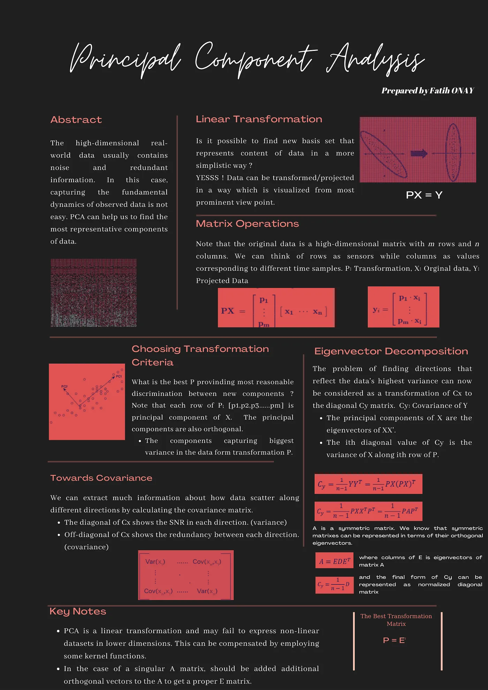

By Fatih Onay
|
|
6 min read
A Simple Guide to Principal Component Analysis
By multiplying our original data matrix X by this transformation matrix P, we get a new, transformed dataset Y that is projected onto our new, more meaningful axes.
This new dataset Y has the same number of dimensions as the original, but the data is now aligned with the principal components. By selecting only the first few principal components (the ones with the largest eigenvalues), we can dramatically reduce the dimensionality of our data while losing minimal information.
In summary, PCA is an elegant way to simplify complex datasets. It's a powerful tool for data scientists, helping us to visualize high-dimensional data, reduce noise, and improve the performance of machine learning models.